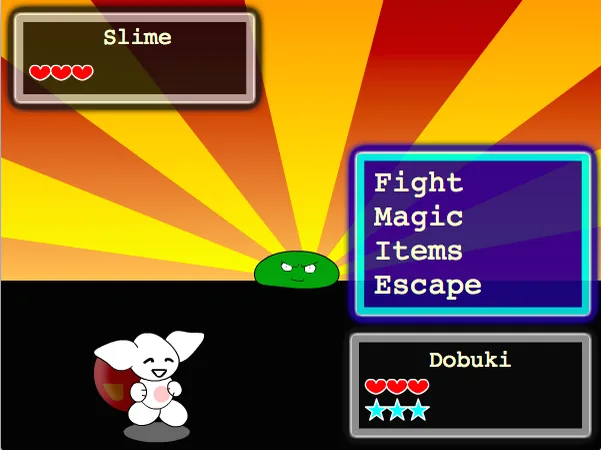

Dobuki’s Epic Journey
Steam, 2023 · adventure / RPGAn adventure across three planets, non-linear, with skill progression and a cast of hand-drawn characters. Inventory, dialogue and map had to coexist on one small screen without a tutorial.